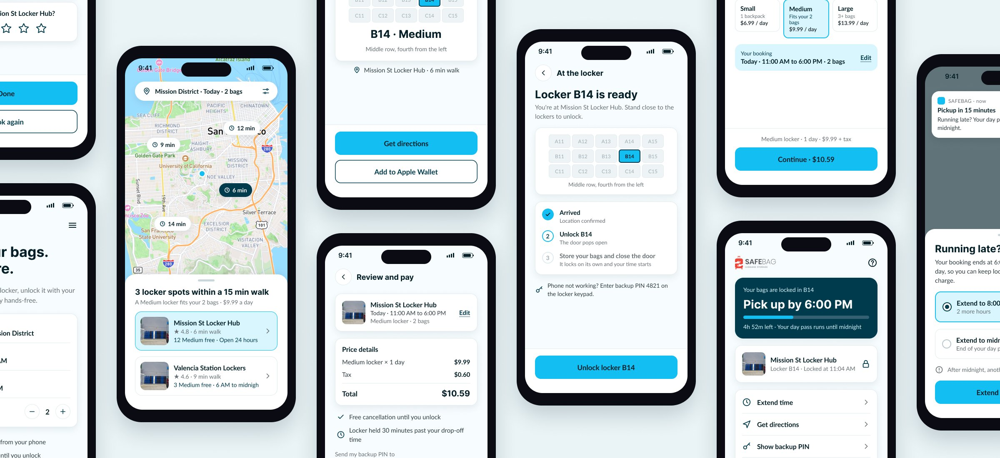
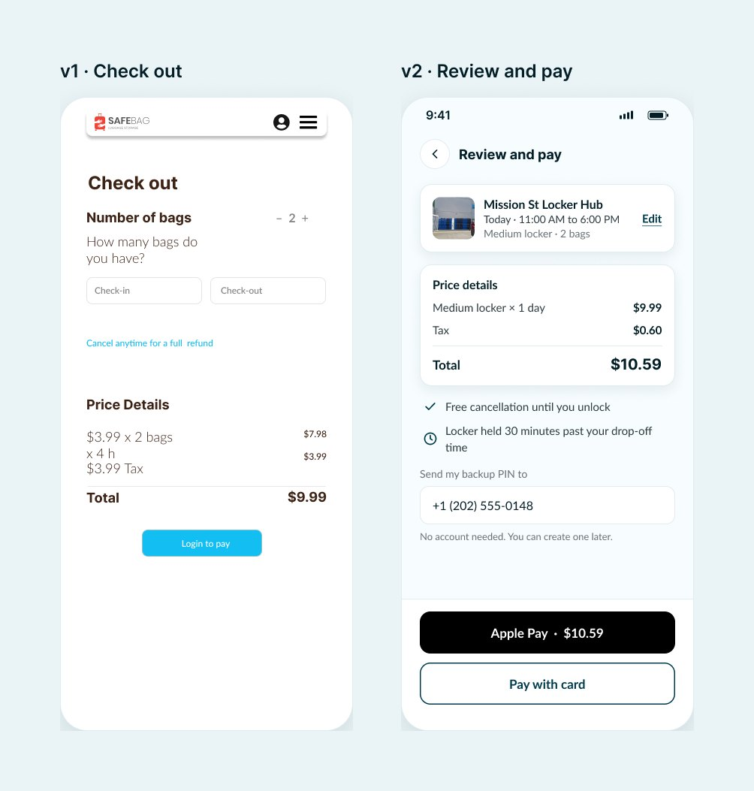
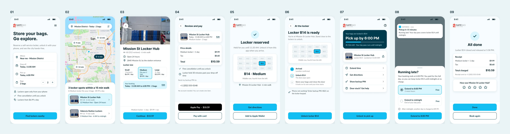
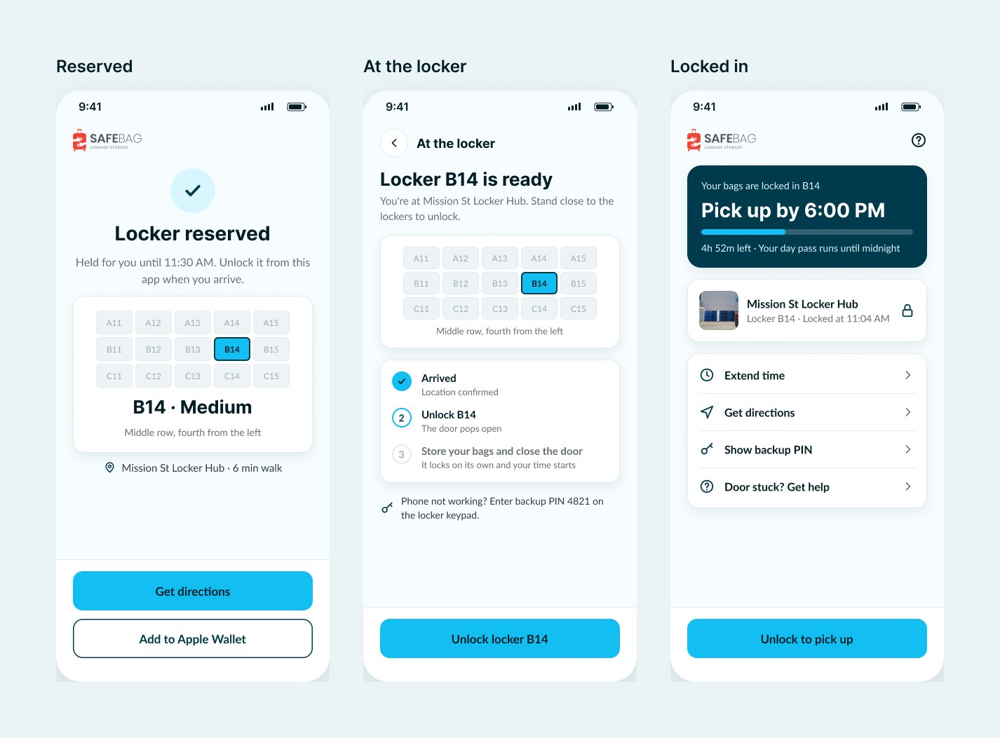
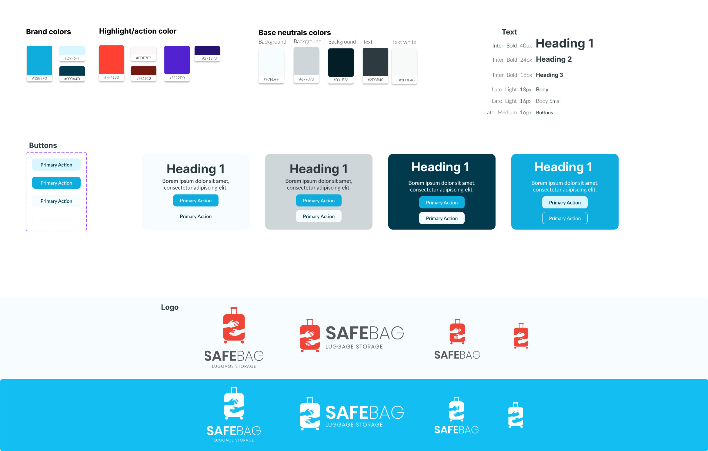

Reducing booking friction for on-the-go luggage storage
SafeBag lets travelers reserve a locker, open it with their phone, and explore the city without their bags. There is no counter and no staff, so the app is the whole service. I designed it from start to finish, then went back and redesigned it.
Role
Design lead: experience, interface and logo
Context
Self-service lockers, no staff on site
Tools
Figma
Outcome
The full journey redesigned, from search to pickup

Designed for someone standing on a street with a suitcase.
The challenge
Travelers want to drop their bags and see the city. With a self-service locker, there is nobody to ask. They are somewhere new, short on time, and about to leave their belongings in a machine.
Every question a staff member would normally answer has to be answered on the screen: which locker is mine, is it really locked, what happens if I'm late.
With no one at the counter, the app has to do the reassuring.
A second look
I designed the first version on my own: the flow, the look and the logo. Coming back to it later, I found problems I would point out in anyone else's work.
It asked people to sign up right before paying.The worst moment to ask for anything extra.
The prices didn't match.Different rates on different screens, and a total that didn't add up.
People typed their dates twice.What they entered at the start was gone by checkout.
It ended at payment.It never got to the locker, the unlock or the pickup, the moments that matter most.

Checkout before and after. One clear price, and no account needed to pay.
Version 2 covers the whole trip, from search to the moment the locker is released, including what happens when plans change.

The full journey, from search to pickup.
Design decisions
Size the locker for them
Nobody knows whether their suitcase fits a "Medium." People say how many bags they have, and the app suggests the size. They confirm a choice instead of guessing one.
Show exactly which locker is yours
The confirmation shows exactly which locker is yours and where it is: B14, middle row, fourth from the left. You walk up knowing where to look.
Plan for the phone dying
A dead battery can't be the reason someone's bags are stuck. Every booking comes with a backup code that opens the locker without the app.
Make running late free
People pay by the day, so keeping the locker until midnight costs nothing extra. The reminder before pickup reads as reassurance, not a warning.
The moment at the locker
Leaving your belongings in a machine is the most nervous part of the trip, so I turned it into a short sequence you can see: arrived, unlocked, bags in, door closed. After that, one look at the app tells you when to come back.

Reserved, opened, locked in. Each screen answers the one question people have at that moment.
The identity
Version 2 keeps the brand I built for the first version: the colors, the type and the logo. One change: button text on the bright blue went from white to dark, so it's readable in sunlight and meets accessibility standards.

The SafeBag brand: colors, type and the logo across light and dark backgrounds.
What I'd do next
The redesign hasn't been tested with travelers yet. Next, I'd watch people use it at a real locker and see where they hesitate. The number I'd watch most is how often people need the backup code. That tells me whether opening the locker works.